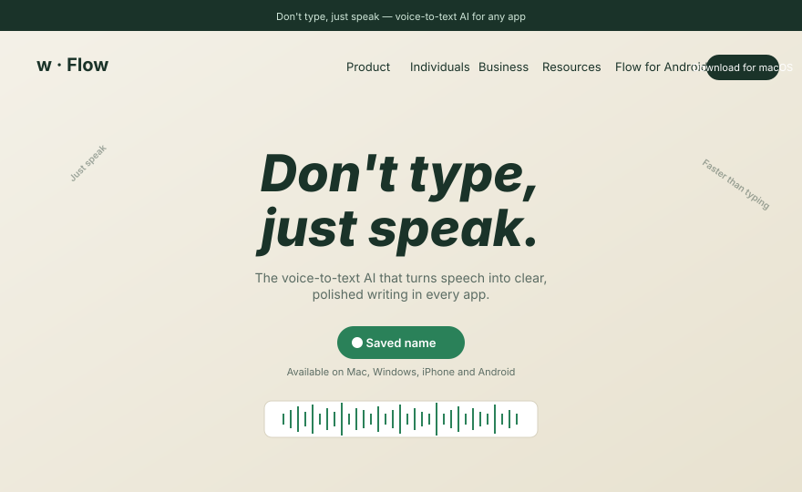
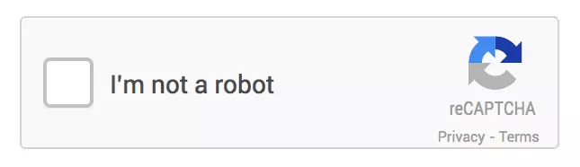

Cómo hablarle
bien a la IA
Sesión 2 · Prompt engineering aplicado + multimodal. Métodos que pueden usar mañana.
La herramienta que voy a usar toda la sesión
Wisprflow
wisprflow.aiDictado con IA en cualquier app. Hablo, lo limpia en tiempo real, lo escribe pulido. Funciona en Slack, Notion, Word, Excel, ChatGPT, correo — donde sea que escribas.
- Atajo: aprietas Fn (o el que configures), hablas, sueltas. Ya está escrito.
- Velocidad real: ~3-4× más rápido que escribir a mano. Sirve igual para correos, prompts largos, mensajes de equipo.
- Limpia muletillas y "uhms". Entiende contexto: si dictas un correo, sale como correo.
- Multi-idioma en la misma frase. Funciona perfecto en español.
No tengo relación comercial con ellos. Lo uso a diario hace 8 meses y cambió cómo trabajo.

La semana pasada entendimos qué es la IA.
Hoy vamos a aprender a hablarle bien.
Todos la usan. Muy pocos saben hacerle las preguntas correctas. Eso es lo que cambiamos en las próximas 2 horas.
Tres ideas que nos dejó la primera sesión
Predice, no piensa
Los modelos generan la siguiente palabra más probable. No entienden. Por eso inventan con confianza.
Verificar siempre
Los datos, las citas, los números. Las alucinaciones suenan perfectas — y son falsas.
Privacidad primero
Nunca datos sensibles, contratos, ni info de clientes en chats sin control. Desactivar entrenamiento.
¿Los CAPTCHAs entrenan a la IA?
Alguien preguntó esto la semana pasada y la conexión se interrumpió. Respuesta completa ahora.
- Sí, históricamente. Google usó reCAPTCHA para digitalizar libros (reconocer palabras borrosas) y hoy lo usa para entrenar Street View y modelos de visión.
- Cuando ves "selecciona los semáforos": estás etiquetando datos para modelos de conducción autónoma.
- El objetivo es inverso: hacer tareas que las máquinas aún no resuelven bien, para distinguir humanos de bots — y de paso, enseñarle a la máquina.
- Hoy: los modelos ya resuelven la mayoría de CAPTCHAs. La carrera sigue.
Esto es un CAPTCHA

Esa casilla que aprietan mil veces al mes — "I'm not a robot" — está haciendo dos cosas a la vez:
- Mide tu comportamiento: cómo movés el mouse, cuánto tardás. Eso ya distingue humano de bot.
- Etiqueta datos para Google. Cuando aparecen las imágenes ("selecciona los buses"), ustedes están entrenando los modelos de visión gratis.
- El sistema aprende de ustedes. Cada click correcto refuerza el modelo. Por eso cada año los CAPTCHAs son más difíciles.
Resumen: cada vez que pasan un CAPTCHA, le hicieron un favor (gratis) a la IA de Google.
Cosas que pudieron hacer esta semana con lo de Sesión 1
Solo con lo básico — saber qué es la IA, cuándo confiar, qué no compartir — ya pueden hacer todo esto:
Limpiar correos largos
Pegar borrador, pedir versión más breve y profesional. 3 minutos vs 20.
Resumir actas o reportes
Pegar el texto. Pedir 5 bullets ejecutivos. Cazar lo accionable.
Explicar un concepto difícil
"Explícame X como si fuera nuevo en el tema." Cero vergüenza, cero tiempo perdido.
Comparar 2 opciones
Lista pros, contras, riesgos y trade-offs lado a lado. Útil antes de cualquier reunión.
Generar borradores
Email, propuesta, respuesta a cliente — el primer 70% lo hace la IA, ustedes pulen.
Traducir con tono corporativo
Mucho mejor que Google Translate cuando importa el registro y el matiz.
Brainstorming guiado
"Dame 10 ideas para X. Critícalas. Quédate con las 3 más fuertes."
Anticipar preguntas
"Si presento X a un comité escéptico, ¿qué 5 preguntas duras me harían?"
Antes de empezar
¿Cuál fue la tarea más útil que le pidieron a una IA esta semana?
Vamos a leer 3 o 4 respuestas en voz alta.
"Hazme un reporte de ventas"
Un texto genérico con estructura inventada, cifras ficticias sin aviso, y tono indefinido. Inservible sin reescribir todo.
Con rol, contexto, formato y restricciones
Un reporte directamente utilizable: estructura ejecutiva, cifras marcadas como [ficticias], tono coherente, longitud controlada.
Esto no es magia.
Es método.
Hoy aprenden el método y salen con prompts que pueden usar mañana. Ni genialidad, ni misterio: una caja de herramientas transferible.
Lo que haremos en las próximas 2 horas
Por qué importa
La intuición input → output.
5 frameworks
RAFAT, razonar paso a paso, ejemplos, instrucciones fijas, iteración.
Multimodal
Imágenes, PDFs, audio.
Aplicado por rol
4 casos reales de Agyl.
Calidad de pregunta
= calidad de
respuesta.
Antes de los frameworks, la intuición base: lo que le entregues al modelo determina lo que te devuelve. No hay atajos.
Imaginen un asistente nuevo, brillante, primer día.
No conoce su empresa, ni sus clientes, ni sus procesos. Si le piden "hazme un reporte" sin contexto — ¿qué esperarían recibir? Exacto. Con la IA es igual.
Sobre ti ni tu empresa
- No te conoce ni sabe tu rol
- No sabe de Agyl ni de tus clientes
- No tiene acceso a tus sistemas
- No recuerda conversaciones previas (salvo en la misma sesión)
- No tiene datos de los últimos meses (si no tiene búsqueda activa)
Patrones generales del mundo
- Patrones de lenguaje y estructura
- Conocimiento general hasta su fecha de corte
- Capacidad de razonar sobre lo que le cuentes
- Habilidad para seguir instrucciones detalladas
- Creatividad dentro de los límites que le pongas
Todo buen prompt tiene al menos estos 4 elementos
¿Quién habla?
Qué experiencia o perfil debe adoptar el modelo.
¿Qué hace?
La acción concreta: redactar, analizar, comparar, resumir.
¿Para quién?
Situación, audiencia, antecedentes, restricciones de negocio.
¿Cómo entrega?
Estructura, longitud, tono, idioma, nivel de detalle.
Contexto.
Lo más importante para el modelo.
Si todo lo que le das al modelo es un verbo y un objeto — "resume esto" — obtendrás lo que obtiene cualquier otro. El contexto es lo que transforma la respuesta de genérica a útil.
3 razones por las que el contexto lo cambia todo
- El modelo no adivina tu realidad. No conoce tu empresa, tu audiencia, tu historia ni tus restricciones. Sin contexto, responde con el promedio estadístico de todo internet — que no sirve para tu caso.
- El contexto elimina ambigüedad. "Escríbeme un correo" → ¿a quién?, ¿con qué tono?, ¿cuál es el objetivo?, ¿qué pasó antes? Cada respuesta que no das, la inventa el modelo.
- El contexto convierte la IA en experta de tu mundo. Cuando le das antecedentes — quién recibe, qué se intentó antes, qué es no negociable — el modelo razona sobre tu problema, no sobre un problema genérico.
Respuesta promedio
Genérica, genérica, genérica. Cualquiera la escribió. No resuelve tu problema.
Respuesta específica
Considera tu audiencia, tu historia, tus restricciones. Resuelve tu problema real.
El consultor externo
Imagínate explicándole a alguien que llega hoy. Todo lo que necesitaría saber, va aquí.
¿Cuál servicio de IA pagar?
Precios verificados al 15 de abril de 2026. Pueden variar por país, impuestos, promos y facturación anual vs mensual.
| Servicio | Plan | Precio | Mejor modelo | Mejor para | Facilidad | Velocidad | Clave | Límite |
|---|---|---|---|---|---|---|---|---|
| ★ ChatGPT | Plus | $20/mo | GPT-5.4 Thinking | All-around | Muy fácil | Rápido | Voz, imágenes, Deep Research, GPTs custom | Plus es tier ligero; heavy users → Pro |
| ★ Claude | Pro | $20/mo | Opus 4.6 | Mejor escritor | Muy fácil | Ráp-medio | Claude Code, Research, projects, voice, Excel/PP beta | Caps importan; Max es power-user |
| ★ Gemini | Google AI Pro | $19.99/mo | Gemini 3.1 Pro | Ecosistema Google | Fácil | Rápido | Gmail/Docs/Vids, 5 TB, NotebookLM, Veo video | Límites varían por país/idioma |
| ★ Perplexity | Pro | $200/año | GPT-5.2 / Sonnet 4.6 / 3.1 Pro | Investigación | Muy fácil | Rápido | 10x citas, model selector, Research, image gen | Max tiene más acceso a features nuevas |
| ★ Poe | 1M pts/mo | $16.67/mo | GPT-5.4 / Opus 4.6 / 3.1 Pro | Muchos modelos | Medio | Variable | Un sub = muchos modelos, más contexto | Sistema de puntos no es ilimitado |
| Le Chat | Pro | $14.99/mo | Mistral SOTA | Budget | Fácil | Rápido | Deep research, 15GB, 1000 projects, Vibe coding | Ecosistema menor, menos mainstream |
El anti-patrón más común
"Hazme un correo." · "Resume esto." · "Dame ideas." · "¿Qué opinas?"
Sin rol, sin contexto, sin formato, sin restricciones. El modelo entrega lo promedio estadístico de todo lo que vio parecido — y eso casi nunca sirve para tu caso específico.
Los 5 frameworks
esenciales.
Cinco herramientas memorables que pueden combinar. Cada una con demo o ejemplo concreto.
Su caja de herramientas a partir de hoy
RAFAT
Rol · Acción · Formato · Antecedentes · Temperatura. El piso mínimo.
Razonar paso a paso
Pídele al modelo que muestre el trabajo antes de concluir.
Aprender con ejemplos
Muéstrale 2-3 ejemplos del resultado que quieres y replica el patrón.
Instrucciones fijas
El "system prompt": reglas permanentes del asistente.
Iteración
El prompt es una conversación, no una orden.
RAFAT — El piso mínimo de todo prompt
Vamos letra por letra. Cada una con ejemplos para que las puedan copiar mañana mismo.
R de Rol — ¿Quién está hablando?
Le dices al modelo qué perfil adoptar. Cambia profundamente la calidad y el ángulo de la respuesta.
Sin rol
"Dame consejos para presentar resultados al comité."
→ Tips de PowerPoint y "habla con confianza".
"Eres CFO con 20 años…"
"Eres CFO con 20 años en consultoría que ha presentado a 200 comités. Dame consejos…"
→ Consejos sobre cómo abrir la conversación, qué cifras priorizar, qué nunca decir.
"Eres editor crítico…"
"Eres editor crítico que detesta el lenguaje corporativo vacío. Revisa este texto."
→ Sin "valoramos profundamente", "stakeholder", "sinergia". Texto cortante y útil.
Tip: entre más específico el rol (años de experiencia, sector, sesgo personal), más calibrada la respuesta.
A de Acción — Verbo claro, una sola tarea
Un verbo concreto. Una tarea por prompt. Si necesitas dos cosas, son dos turnos.
Hazme · Ayúdame · Ve si
- "Hazme algo con esto"
- "Ayúdame con el correo"
- "Ve si está bien"
- "Mira qué piensas"
El modelo adivina y usualmente adivina mal.
Redacta · Resume · Compara · Clasifica · Critica · Reescribe
- "Redacta una respuesta a este correo"
- "Resume estos 3 documentos en 5 bullets"
- "Compara estas 2 propuestas en una tabla"
- "Critica este texto como si fueras editor financiero"
- "Reescribe en mitad de palabras"
Regla: si tu prompt no tiene un verbo claro al principio, reescríbelo.
F de Formato — Cómo lo quieres entregado
Estructura, longitud, idioma, nivel de detalle. Si no lo dices, el modelo elige por ti — y casi nunca elige bien.
Tabla / bullets / prosa
"Devuélvelo como tabla con columnas Acción / Responsable / Fecha / Riesgo."
Palabras o caracteres
"Máximo 150 palabras." · "Resumen en 5 bullets, cada uno ≤ 25 palabras."
Español / inglés / técnico / coloquial
"En español neutro corporativo colombiano, sin anglicismos."
Para quién es
"Versión para gerencia (alto nivel)" vs "versión para equipo técnico (con cifras)".
Cómo distinguir lo dudoso
"Marca con [ficticio] cualquier cifra que inventes para llenar el ejemplo."
Lista solo el resultado
"Devuelve solo la tabla. Sin explicaciones ni preámbulos."
A de Antecedentes — Lo que el modelo NO sabe
El modelo no conoce tu empresa, tus clientes, ni la historia detrás del problema. Lo que tú das por obvio, él lo ignora.
Audiencia
"Para un comité directivo escéptico que ya rechazó dos propuestas similares este año."
Contexto del problema
"La relación con este cliente lleva 4 años. Hubo una queja seria hace 6 meses por un retraso similar."
Lo que NO se puede hacer
"No podemos ofrecer descuento. No podemos extender el plazo. No podemos cambiar al equipo asignado."
Para no repetir
"Ya intentamos una llamada formal y un correo de disculpa. No funcionaron — necesito otro ángulo."
Tu posición
"Sostener la cuenta es prioridad, pero no a costa de aceptar responsabilidad que no es nuestra."
Cuándo se necesita
"Tengo que enviar esto antes del viernes 18 abril. La reunión con el cliente es el lunes 21."
Regla mental: imagínate explicándoselo a un consultor externo que llega hoy. Todo lo que necesitarías contarle, va aquí.
T de Temperatura — Cuán creativo, cuán arriesgado
El término viene del parámetro técnico del modelo, pero en RAFAT lo usamos para describir tono + nivel de creatividad. Por defecto, los LLM operan al ~70% de temperatura — son más creativos que puntuales. Si quieres precisión, tienes que bajársela.
Conservador y factual
"Tono neutro, profesional, sin adjetivos. No inventes nada que no esté en la fuente."
Para: reportes regulatorios, comunicaciones legales, análisis de datos, actas.
Profesional con personalidad
"Tono firme pero cálido. Permite alguna metáfora o frase con personalidad si encaja."
Para: propuestas comerciales, correos a clientes, presentaciones internas.
Creativo y arriesgado
"Tono disruptivo. Atrévete con metáforas raras. Prioriza memorabilidad sobre seguridad."
Para: brainstorming, naming, copys de campañas, ganchos de presentación.
⚡ Dato clave: el modelo por defecto viene al 70% — más creativo que puntual. Si el output sale "demasiado seguro" o "demasiado loco", es probablemente esto lo que está mal calibrado.
Respuesta a un cliente insatisfecho
ROL: Eres gerente de cuenta senior de una consultora de aseguramiento con 15 años atendiendo clientes corporativos.
ACCIÓN: Redacta una respuesta a un cliente que se quejó por retraso de 2 semanas en un informe regulatorio.
FORMATO: Correo máximo 180 palabras. Asunto incluido. Cierra con próximo paso concreto.
ANTECEDENTES: El retraso se debió a cambios de alcance solicitados por el mismo cliente a mitad de proyecto. Relación de 4 años, valiosa. Sostener sin aceptar culpa que no es nuestra.
TEMPERATURA: Firme, empático, profesional. Conservador en concesiones, cálido en tono. Ni defensivo ni complaciente.
Lo que la mayoría escribe
Escríbele un correo a un cliente que se quejó porque nos tardamos en entregar un informe.
→ Correo genérico, defensivo, sin información del caso. Inservible.
Lo que sale 10× mejor
ROL: Gerente de cuenta senior, consultora de aseguramiento, 15 años con clientes corporativos.
ACCIÓN: Redacta una respuesta a un cliente que se quejó por un retraso de 2 semanas en un informe regulatorio.
FORMATO: Correo ≤180 palabras. Asunto incluido. Cierra con próximo paso concreto y fecha.
ANTECEDENTES: Retraso causado por cambios de alcance del propio cliente a mitad del proyecto. Relación de 4 años, valiosa. Sostener sin aceptar culpa que no es nuestra.
TEMPERATURA: Conservador en concesiones, cálido en tono. Firme, empático, profesional. Ni defensivo ni complaciente.
→ Correo enviable directo: tono calibrado, posición sostenida, propuesta concreta.
Hagámoslo ahora — abro Claude Sonnet 4.5
Mismo modelo, dos prompts, dos outputs radicalmente diferentes. Lo hacemos los dos en vivo y leemos el output completo.
Tip: en Claude, abre el menú de modelos arriba a la derecha y elige Sonnet 4.5 — el más fuerte hoy en redacción corporativa. Para análisis profundo: Opus 4. Para tareas rápidas: Haiku.
"Piensa paso a paso."
Tres palabras que fuerzan al modelo a desglosar su razonamiento antes de responder. No es un truco — es pedirle que muestre el trabajo.
El modelo razonando — paso por paso
Aprieta "Siguiente paso →" para ver cómo se desglosa internamente.
Pregunta entra
"Distribuye $50k de marketing B2B en LATAM."
Descompone
// Subproblemas:
// 1. ¿qué canales?
// 2. ¿qué ROI por canal?
// 3. ¿cómo distribuir?
// 4. ¿qué riesgos?
Resuelve cada uno
// Canales B2B LATAM:
// LinkedIn Ads (alto)
// SEO contenido (medio)
// Eventos (alto si nicho)
// Email outbound
Combina resultados
// Distribución:
// LinkedIn 40% — $20k
// SEO 25% — $12.5k
// Eventos 25% — $12.5k
// Email 10% — $5k
Sintetiza respuesta
Respuesta final con justificación de cada decisión + 3 riesgos identificados + plan de mitigación.
Cuatro situaciones donde CoT transforma el output
- Decisiones multivariable. Ej: elegir proveedor, priorizar proyectos, distribuir presupuesto.
- Análisis con muchos datos. Ej: interpretar una gráfica, diagnosticar un incidente, leer un informe.
- Cálculos y lógica. Matemáticas, cálculos financieros, inferencias escalonadas.
- Explicaciones didácticas. Cuando alguien más leerá el resultado y necesita entender por qué.
Respuesta genérica
Tengo $50,000 USD para marketing digital de una empresa B2B de software. ¿Cómo lo distribuyo?
→ Listado plano, porcentajes sin justificar, riesgo ignorado.
Razonamiento estructurado
...Piensa paso a paso: 1) canales B2B efectivos, 2) ROI típico de cada uno, 3) distribución justificada, 4) riesgos y mitigación.
→ Análisis profundo, distribución defendible, gaps identificados.
Dale 2 o 3 ejemplos
y el modelo replica el patrón.
La forma más rápida de alinear el tono, la estructura y los criterios: mostrarle cómo se ve el resultado correcto. (En la jerga técnica esto se llama few-shot prompting.)
Tres aplicaciones inmediatas
Tickets y correos
Muestra 3 tickets clasificados como urgente/rutina/escalable. El modelo replica el criterio para los nuevos.
Reportes con formato
Pega 2 reportes previos como plantilla. Pide un tercero con los mismos bloques y tono.
Comunicación cliente
Muéstrale 3 correos que representen la voz de Agyl. Pídele responder en ese mismo registro.
Categorías inestables
Clasifica estos tickets en urgente, rutina o escalable:
1. "No puedo acceder, tengo entrega hoy"
2. "¿Cómo cambio mi contraseña?"
3. "SAP fallando en 4 clientes a la vez"
4. "Necesito el manual en PDF"
5. "Error en cálculo del cierre trimestral"
→ El modelo inventa criterios. La misma respuesta cambia entre ejecuciones.
Criterio replicable
URGENTE — operación crítica hoy. Ej: "Sistema caído, 50 usuarios sin facturar".
RUTINA — info o función estándar. Ej: "¿Dónde descargo el manual?"
ESCALABLE — afecta varios clientes / lógica core. Ej: "Reportes mal en 3 cuentas".
Clasifica los 5 tickets de arriba. Devuelve solo la categoría.
→ El modelo replica el criterio. Resultado: 1·URGENTE 2·RUTINA 3·ESCALABLE 4·RUTINA 5·ESCALABLE.
Un contrato con tu asistente.
No una instrucción suelta.
Imaginen un empleado nuevo. Cada mañana le dicen quién es, qué hace, qué tono usa, qué no puede decir. ¿O lo configuran una vez y queda listo para siempre?
Lo que se configura una vez. Lo que escriben cada día.
Instrucciones fijas
Define quién es el asistente, cómo se comporta, qué tono usa, qué reglas siempre sigue, qué nunca hace. Se configura una vez. Aplica a cada conversación nueva.
Ejemplo: "Eres editor financiero senior de Agyl. Siempre marcas ambigüedades. Nunca inventas cifras."
La tarea específica
La pregunta o instrucción concreta de cada mensaje. Cambia cada vez. No necesita repetir rol ni contexto — ya viven en el system prompt.
Ejemplo: "Revísame este correo" · "Valida este reporte del Q3"
Regla práctica: si lo vas a repetir en más de 3 conversaciones → va al system prompt.
El system prompt persiste. Los user prompts cambian.
Aprieta "Siguiente mensaje →" para ver cómo se va formando una conversación.
Editor financiero Agyl
"Eres editor financiero senior. Marcas ambigüedades [así]. Nunca inventas cifras — las pides. Español neutro corporativo."
La receta de un system prompt que funciona
Lo estable
- Rol y experiencia: "editor financiero con 10 años en aseguramiento"
- Reglas duras: "nunca inventes cifras", "siempre cita fuente"
- Tono y registro: "español neutro corporativo colombiano"
- Formato habitual: "por defecto responde en bullets ejecutivos"
- Lo que NO debe hacer: "no uses frases vacías", "no asumas — pregunta"
Lo que cambia cada vez
- La tarea puntual del día: eso es user prompt
- Datos frescos: cifras del mes, correos concretos, documentos
- Restricciones de un solo uso: "para el correo de hoy, máximo 120 palabras"
- Contexto temporal: "hoy es 15 de abril" — se queda viejo
Piensa en el system prompt como el manual del puesto. El user prompt es la solicitud del día.
En las herramientas que ya usan
Custom Instructions
Ruta: tu avatar → Settings → Personalization → Custom Instructions.
Dos campos: "What should ChatGPT know about you?" y "How should ChatGPT respond?". Aplica a todas tus conversaciones.
Para uno solo proyecto: usa GPTs (My GPTs → Create).
Projects
Ruta: sidebar izquierdo → Projects → New Project.
Define Instructions (el system prompt) + Project knowledge (docs de referencia: manuales, plantillas, glosarios). Cada chat nuevo dentro del proyecto hereda ambas cosas.
Ventaja Agyl: subir circulares vigentes una vez → todos los análisis las usan.
Cada uno se configura una vez. Se usa cien veces.
Editor financiero senior
"Eres editor financiero con 10 años en aseguramiento. Revisas textos y cifras con rigor. Siempre: (1) marcas ambigüedades entre corchetes, (2) propones 2 alternativas cuando algo es mejorable, (3) usas español neutro corporativo, (4) nunca inventas cifras — si faltan las pides."
Uso: "revísame este correo" / "valida este reporte"
Analista regulatorio
"Eres analista de cumplimiento experto en circulares de la Superintendencia Financiera de Colombia. Cuando recibas un texto regulatorio: extraes plazos, límites cuantitativos y sanciones; evalúas impacto operativo (alto/medio/bajo); citas el numeral exacto. Si el texto no es regulatorio, lo dices y no inventas."
Uso: pegar circular nueva → brief automático para el comité
Coach de comunicación ejecutiva
"Eres coach de comunicación para gerentes. Cuando recibas un mensaje, lo reescribes en 3 versiones: (1) directa-asertiva, (2) diplomática-corporativa, (3) cálida-personal. Después marcas en cuál escenario funciona mejor cada una. Nunca usas frases vacías tipo 'valoro tu perspectiva'."
Uso: "revisa este correo a un cliente difícil"
El prompt es una conversación,
no una orden.
El primer output casi nunca es el final. Quien mejor usa la IA no escribe prompts perfectos — itera con criterio hasta que sirva.
De primera versión a correo listo para enviar
Dos frases que cambian la iteración
- "Antes de responder, pregúntame lo que te falte saber." El modelo deja de asumir. Te hace 3-4 preguntas precisas. Tú respondes. La respuesta final es 10× más útil.
- "Evalúa tu propia respuesta como si fueras un experto crítico. Luego reescríbela." El modelo corrige sus propios descuidos, redundancias, generalidades.
- "Dame 3 versiones distintas: formal, directa y creativa. Luego elige la mejor y explica por qué." Variedad + criterio en una sola vuelta.
La IA ya no
solo lee texto.
Ve imágenes, transcribe audio, procesa documentos. Lo que manejan a diario ya es materia prima.
Más allá del texto escrito
Imágenes y gráficas
Analiza dashboards, screenshots, fotos de pizarra.
PDFs largos
Informes, contratos, circulares regulatorias.
Reuniones grabadas
Transcripción + resumen + actas automáticas.
Texto en imágenes
Notas manuscritas, recibos, documentos escaneados.
La IA entra al Excel. No al revés.
Extensión oficial de Anthropic
Claude vive dentro de Excel en un panel lateral. Ve tus hojas, entiende las tablas, escribe fórmulas, crea modelos, analiza datos — sin copiar y pegar entre apps.
Requiere: Microsoft 365 + plan Claude Max o Team. Se instala desde la store de Excel.
El analista deja de ser operario
- Construye modelos financieros desde una descripción
- Audita fórmulas y encuentra inconsistencias
- Genera tableros de seguimiento en minutos
- Explica la lógica línea por línea → auditable
Lo que antes tomaba una tarde de un analista — ahora son 3 minutos con un buen prompt RAFAT.
Copiar · pegar en el panel de Claude en Excel
Actúa como analista financiero senior con experiencia en aseguramiento corporativo. A partir del histórico de esta hoja (Mes · Ingresos · Nuevos clientes · Churn, 2024-2025), construye un modelo de proyección a 12 meses con 3 escenarios: base, optimista y pesimista. Crea una hoja nueva llamada "Modelo_12M" con: - Fila superior con supuestos nombrados (crecimiento mensual, churn asumido, ticket promedio), celdas de entrada en amarillo. - 3 tablas, una por escenario, con fórmulas (no valores pegados). - Totales anuales en negrita. - Gráfica de líneas comparando los 3 escenarios. - Detecta hasta 2 inconsistencias en el histórico original y márcalas con un comentario rojo. Sé conservador y auditable: cada supuesto fuerte debe ir comentado. Si te falta algún dato esencial, pregúntame ANTES de construir. No inventes cifras. El comité lo revisa el viernes.
Notas manuscritas → acta de reunión
Transcribe estas notas manuscritas. Luego reorganízalas como acta: fecha y asistentes si se deducen, decisiones tomadas, acciones comprometidas (qué/quién/cuándo), temas pendientes, próximos pasos. Marca [ilegible] cuando aplique.
PDF largo → resumen ejecutivo + riesgos
Acabo de subirte un informe. Haz: 1) resumen en 5 bullets ≤25 palabras, 2) 3 riesgos principales con la página donde aparece cada uno, 3) cláusulas o cifras ambiguas que requieran validación, 4) pregúntame qué quiero profundizar antes de seguir. No inventes datos que no estén en el documento.
Reunión grabada → acta con acuerdos
Más conciso, más directo
- Respuestas más breves por defecto
- Excelente en OCR y texto en imágenes
- Búsqueda web integrada más natural
- Mejor integración con herramientas (browsing, Python)
Más profundo, más matizado
- Mejor en análisis largo y documentos extensos
- Razonamiento más cuidadoso
- Más humilde — pide aclaraciones antes
- Mejor en tono profesional corporativo
Antes de seguir
¿Qué tipo de archivos manejan a diario que podrían pasarle a una IA?
Las respuestas alimentan la sesión 3 — herramientas y automatizaciones.
NotebookLM:
su biblioteca con IA encima.
El siguiente paso natural del multimodal: subes 5, 20, 50 documentos y la IA responde solo basándose en ellos. Sin alucinaciones inventadas. Citado a la fuente.
Una libreta inteligente — gratis, hecha por Google
Tú subes las fuentes. La IA solo responde sobre ellas.
A diferencia de ChatGPT o Claude (que saben "del mundo"), NotebookLM solo conoce lo que tú le diste. Reduce alucinaciones a casi cero — y cita el documento exacto en cada respuesta.
Casi cualquier cosa
PDFs, Google Docs, Slides, sitios web (URL), YouTube (transcribe video), texto pegado, archivos de audio. Hasta 50 fuentes por libreta en versión gratuita. 300 en la paga.
URL: notebooklm.google.com · Login con cuenta Google · Gratis sin tarjeta de crédito.
De cero a libreta operativa en 5 minutos
Tres superpoderes que ChatGPT y Claude no tienen
Tus documentos hechos podcast
Un botón. Dos voces conversan en ~10 min sobre lo que subiste. En español. Ideal para repartir un informe denso al equipo en formato escuchable.
Cada afirmación con el origen
Cada respuesta viene con burbujas que abren el párrafo exacto del PDF original. Audita en un click si la IA dijo la verdad.
Cruza 50 fuentes a la vez
"¿Qué dice cada circular sobre límites de exposición?" → comparativa con citas a las 7 circulares simultáneamente. ChatGPT no maneja ese volumen con esa precisión.
Una libreta con 3 documentos regulatorios
Vamos a abrir NotebookLM, crear una libreta nueva, subir 3 PDFs preparados, y hacer 4 preguntas comparativas. Después generamos un Audio Overview de 8 minutos que pueden compartir con su equipo.
1. Hazme un brief ejecutivo de 6 bullets que cubra los puntos clave de las 3 fuentes.
2. ¿En qué temas las 3 fuentes coinciden, y en qué se contradicen? Con cita exacta.
3. Lista todos los plazos y deadlines mencionados, ordenados cronológicamente.
4. Genérame una guía de estudio con 10 preguntas que un analista junior debería poder responder leyendo estas fuentes.
Tres libretas que pueden armar mañana mismo
Libreta "Cliente X — todo el contexto"
Suban: contratos vigentes, propuestas previas, actas de las últimas 5 reuniones, correos de hitos.
Pregunta de prueba: "¿Cuáles son los 3 dolores recurrentes que ha mencionado este cliente en el último año? Cita las fuentes."
Libreta "Cumplimiento 2026"
Suban: las últimas 5 circulares de la SFC + el manual interno de cumplimiento de Agyl.
Pregunta de prueba: "Compárame los plazos de reporte entre las 5 circulares. ¿Hay alguno que se solape o contradiga?"
Libreta "Inducción nuevo analista"
Suban: manuales internos, presentaciones de inducción, FAQs históricas, política de calidad.
Acción: Generen un Audio Overview de 15 min que el nuevo escuche el primer día. Después una "Guía de estudio" con preguntas para validar comprensión.
Necesitas precisión sobre fuentes
- Tienes muchos documentos relacionados (5 o más)
- Necesitas citas verificables al texto original
- Quieres comparar o cruzar información entre fuentes
- Vas a volver a consultar los mismos docs muchas veces
- Quieres convertir un cuerpo de conocimiento en audio
Necesitas crear, no consultar
- Vas a redactar, revisar o reescribir un texto
- Necesitas razonamiento creativo o análisis abierto
- Trabajas con un solo documento y conversación corta
- Quieres que use conocimiento general del mundo
- Necesitas integraciones (Python, búsqueda web, agentes)
Casos aplicados
por rol.
Cuatro casos reales que combinan RAFAT, razonamiento paso a paso, ejemplos y multimodal. Hacemos los dos primeros en vivo. Los otros dos tienen el prompt completo en el material entregable.
Propuesta comercial desde un brief de 1 página
- Framework: RAFAT + 2 propuestas previas como ejemplo · Entrega: propuesta de 2 páginas (Entendimiento / Enfoque / Equipo / Entregables / Plan / Inversión)
Actúa como gerente comercial senior de una consultora de aseguramiento con 12 años cerrando cuentas corporativas en LATAM. Te voy a adjuntar: (1) el brief de 1 página del cliente y (2) dos propuestas previas que GANAMOS. Úsalas como referencia de estructura, tono y nivel de profundidad — no copies contenido. Construye una propuesta comercial de 2 páginas con estas secciones: Entendimiento · Enfoque · Equipo · Entregables · Plan (fases + fechas) · Inversión (rango, sin cerrar cifra). Reglas duras: no inventes datos del cliente (si falta, pregúntame antes). No uses frases genéricas tipo "valor agregado", "soluciones a la medida". Nombra métricas concretas. Cierra con una frase que anticipe la objeción más probable de ese cliente. Tono: directo-profesional, español neutro corporativo.
Análisis de incidente + plan de acción priorizado
- Framework: CoT explícito + rol analista senior + salida en tabla · Entrega: línea de tiempo + causa raíz + acciones correctivas/preventivas + KPIs
Eres analista senior de operaciones con experiencia en gestión de incidentes en servicios financieros. Voy a pegarte la descripción de un incidente (fecha, hora, sistemas afectados, usuarios impactados, causa preliminar, acciones tomadas hasta ahora). Piensa paso a paso antes de responder: 1) Reconstruye una línea de tiempo minuto a minuto con los hechos disponibles. 2) Identifica causa raíz + 2 causas alternativas (hipótesis con evidencia requerida). 3) Separa acciones correctivas (hoy) vs preventivas (2 semanas). 4) Define 3 KPIs de monitoreo para detectar recurrencia. Formato final: una tabla con columnas | Acción | Tipo (correctiva/preventiva) | Responsable sugerido | Plazo | Criterio de cierre |. No inventes datos del incidente. Si falta información crítica para la causa raíz, márcalo como "requiere validación" antes de concluir.
Resumen ejecutivo de documento regulatorio + KPIs
- Framework: Multimodal (PDF) + CoT + formato estructurado · Entrega: cambios clave + impacto + procesos afectados + roadmap 90 días
Eres analista de cumplimiento regulatorio especializado en circulares de la Superintendencia Financiera de Colombia y entidades equivalentes en LATAM. Acabo de subirte un documento regulatorio. Analízalo paso a paso y devuélveme: 1) Resumen ejecutivo · 5 bullets ≤25 palabras cada uno. 2) Los 5 cambios normativos más relevantes, cada uno con: qué cambia, numeral citado, impacto operativo (alto/medio/bajo) y justificación del nivel. 3) Tabla de KPIs extraídos: plazos, límites cuantitativos, porcentajes, sanciones, fechas de entrada en vigencia. 4) Procesos internos que deben revisarse (ej: suscripción, reservas, reporting, comunicación al cliente). 5) Roadmap de 90 días con hitos mensuales y riesgo residual si no se cumple. Regla dura: no inventes numerales ni cifras. Si algo es ambiguo en el texto, márcalo como "[ambiguo — validar]" en lugar de asumir.
Preparación de reunión con stakeholder difícil
- Framework: Iteración en 3 turnos + control de tono · Entrega: escenarios + guion del primer minuto + respuestas calibradas
Eres coach ejecutivo senior con 15 años preparando directivos para conversaciones difíciles. Mañana tengo una reunión de 45 min con [describe al stakeholder: rol, antecedente, relación, tensión actual]. El objetivo de la reunión es [tu objetivo en 1 línea]. Dame: 1) Los 3 escenarios más probables de cómo abrirá la conversación. 2) Para cada escenario, los 2 argumentos más fuertes que puede traer y cómo los apoyará emocionalmente (no solo racional). 3) Una respuesta para cada argumento que VALIDE su preocupación sin ceder el objetivo. Tono: profesional pero humano. Nada de frases corporativas tipo "entiendo tu perspectiva".
Turno 2: Profundiza el escenario más probable. Escríbeme el guion palabra por palabra del primer minuto de MI intervención (apertura + reencuadre). 150 palabras máximo. Turno 3: Revisa tu guion. Quita toda frase que suene a plantilla corporativa. Que suene a una persona real hablando, no a un manual. Reescríbelo.
3 ideas para
llevarse.
Si se van hoy con estas tres grabadas, la sesión hizo lo que tenía que hacer.
La calidad del output
es la calidad del input.
RAFAT es su piso mínimo — rol, acción, formato, antecedentes, temperatura. Si les falta una, el output se degrada. Si las tienen las cinco, están por encima del 90% de los usuarios.
La IA no solo lee:
ve, oye, procesa documentos.
Las gráficas, PDFs, notas manuscritas y audios que manejan a diario ya son materia prima. No hace falta convertir nada — solo subirlo con un buen prompt.
El prompt es una conversación.
No escriban prompts perfectos. Iteren. Pídanle al modelo que se autoevalúe, que les pregunte lo que le falta, que les dé tres versiones. La mejor IA es la conversada.
Hoy le hablamos bien a la IA.
La próxima le enseñamos a actuar por nosotros.
Sesión 3: herramientas, flujos y agentes. De generar texto a ejecutar tareas reales. Es el siguiente salto — y es mayor que este.
Últimos 4 minutos — ¿qué quedó pendiente?
Escriban lo que quedó sin responder, dudas sobre prompts específicos, o qué les gustaría ver aplicado a su área.

Nos vemos
la próxima.
El siguiente paso: pongan a prueba RAFAT esta semana en un prompt real. Sesión 3 es agentes.